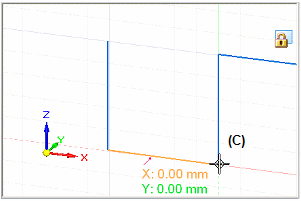

Reposition the grid origin point
-
Choose the Reposition Origin command
 .Tip:
.Tip:This command is available only when you have locked a sketch plane. To learn the different ways you can do this, see the Help topic, Lock or unlock a sketch plane.
-
Specify where you want the origin point to be using one of these methods:
-
(In Draft) On the drawing sheet, click where you want the origin point to be.
The new origin point location is marked by a concentric circle and dot.
-
(In profile or sketch) In the sketch view, click where you want the origin point to be.
The new origin point location is marked by a concentric circle and dot.
-
(In synchronous modeling) In the graphics window, click the origin at the center of the steering wheel (A), and then click where you want the new grid origin point to be (B).


The origin X and Y intersecting lines are moved to the new location.

Tip:-
You can click a part edge, a keypoint, a grid point, or another type of point in the graphics window.
-
In synchronous modeling, when you move the grid origin, you also move the sketch plane origin. At the same time that you move the origin point, you can use the steering wheel to realign the sketch plane X-axis with the X orientation of the sketch or model face for the purpose of dimensioning and annotating. See the help topic, Set sketch plane horizontal and vertical for dimensioning.
-
-